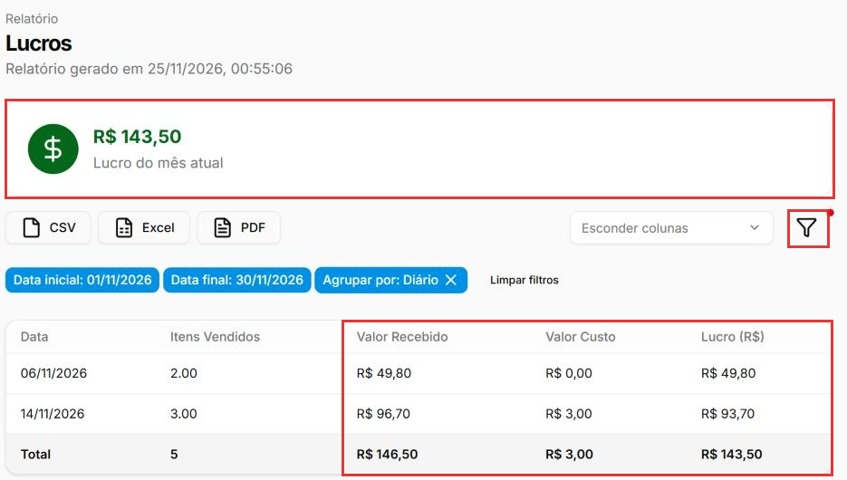
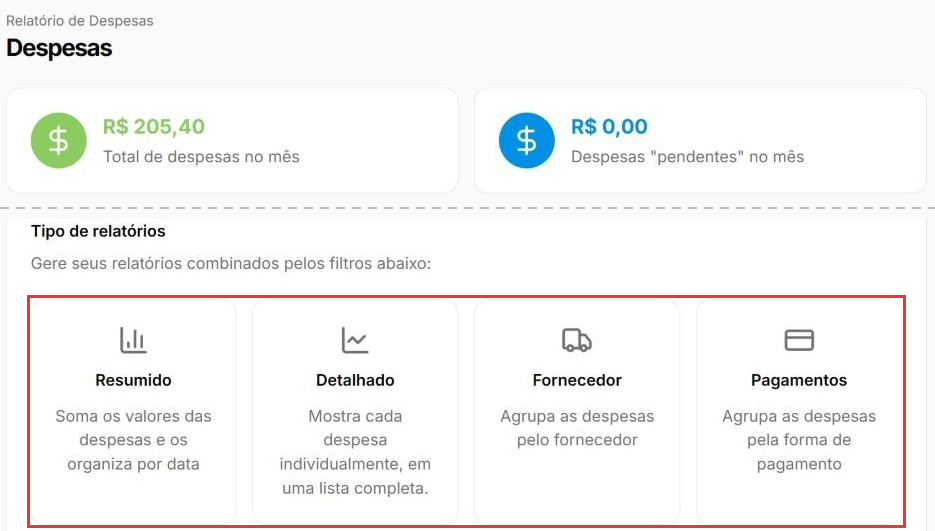
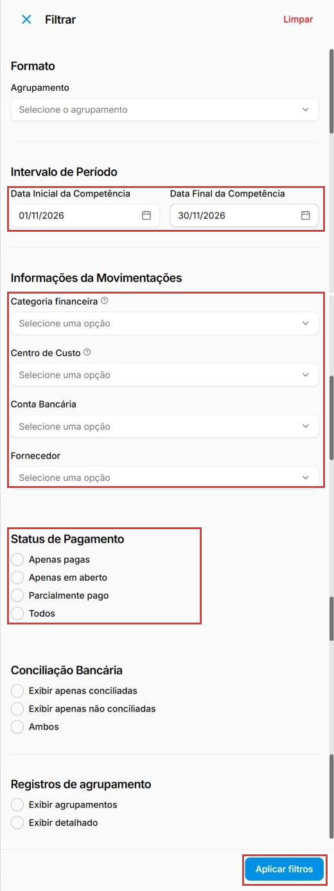
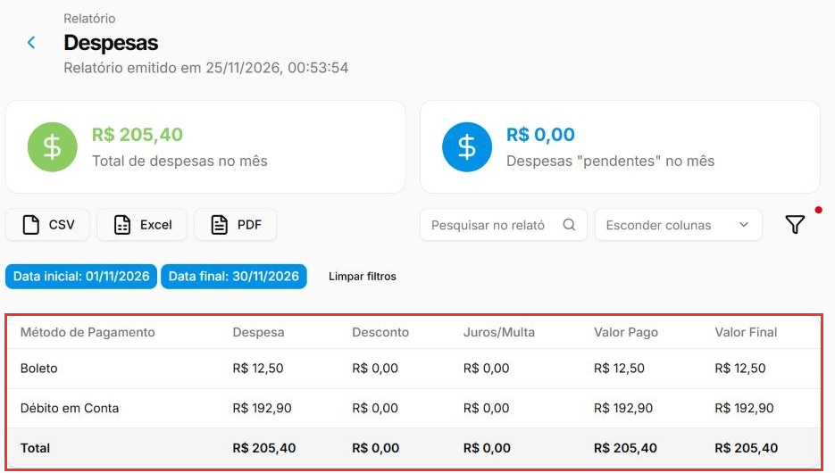

Como ver o lucro e as despesas
O menu Relatórios → Financeiro tem dois relatórios que andam juntos: o de Lucro, que mostra quanto a loja ganhou nas vendas descontando o custo dos produtos, e o de Despesas, que mostra quanto a loja gastou. Exemplo: em novembro, o dono vê que as vendas deram R$ 143,50 de lucro sobre o custo dos produtos e que as despesas do mês somaram R$ 205,40. Comparando os dois, ele tem uma primeira ideia de que as vendas ainda não pagam os gastos e confirma o resultado na DRE.
Entenda o conceito
O lucro deste relatório. No relatório de Lucros, cada linha mostra os Itens Vendidos, o Valor Recebido, o Valor Custo e o Lucro (R$), que é o valor recebido menos o custo. No exemplo: R$ 146,50 recebidos − R$ 3,00 de custo = R$ 143,50 de lucro. Esse lucro não desconta as despesas da loja (aluguel, luz, tarifas); é o que se costuma chamar de lucro bruto.
De onde vem o custo. O Valor Custo é o custo dos produtos vendidos. Quando ele aparece R$ 0,00, como no dia 06/11 do exemplo, o lucro do dia fica igual ao valor recebido. Se isso acontecer, confira o custo dos produtos (veja Como cadastrar um produto) e, se ele estiver certo, fale com o suporte.
As despesas. O relatório de Despesas lista as contas a pagar da loja, inclusive as parcelas das compras (no exemplo, Compra 19 (1/2)). Ele tem quatro tipos:
| Tipo | O que mostra | No exemplo |
|---|---|---|
| Resumido | Soma os valores das despesas e os organiza por data. | R$ 205,40 no período de 01/11 a 30/11. |
| Detalhado | Cada despesa em uma linha, com competência, vencimento, pagamento, categoria financeira, fornecedor, descrição, status e valores. | Conta de luz R$ 180,00, tarifa R$ 12,90 e uma compra de R$ 12,50. |
| Fornecedor | Agrupa as despesas pelo fornecedor. | A compra aparece no fornecedor dela (R$ 12,50); as despesas sem fornecedor aparecem como Não informado (R$ 192,90). |
| Pagamentos | Agrupa as despesas pela forma de pagamento. | Boleto R$ 12,50 e Débito em Conta R$ 192,90. |
Os quadros do alto. Na tela de Despesas, Total de despesas no mês e Despesas "pendentes" no mês dão um resumo rápido do mês atual.
Lucro × DRE. Para ver o resultado completo da loja, com as vendas, os custos e as despesas na mesma conta, use o relatório de resultados (DRE).
Quando usar: para saber quanto as vendas de cada dia (ou semana, mês...) deixaram de lucro sobre o custo e para acompanhar os gastos por categoria, fornecedor ou forma de pagamento. Quando não usar: para o resultado final do mês (use a DRE) ou para ver o dinheiro que entrou, saiu e vai entrar (use o fluxo de caixa).
Antes de começar
- Para o lucro ficar certo, os produtos precisam ter custo.
- Para as despesas aparecerem, elas precisam estar lançadas em contas a pagar (veja Como lançar uma conta a pagar ou a receber) ou vir de uma compra (veja Como lançar uma compra).
Nos prints, o quadrado vermelho mostra onde você deve clicar ou digitar.
Veja o lucro das vendas
No menu do lado esquerdo, clique em Relatórios → Financeiro → Lucro. Abre o relatório Lucros, com o mês atual. No alto aparece o Lucro do mês atual; abaixo, a tabela com uma linha por dia (Agrupar por: Diário) e o Total.
Para mudar o período ou o agrupamento, clique no funil, à direita. No painel Filtrar, escolha o Agrupamento (Período, Diário, Semanal, Mensal, Trimestral, Semestral ou Anual), a Data Inicial e a Data Final e, se precisar, Empresas (para quem tem mais de uma loja na conta) e Usuários. O agrupamento decide o que cada linha soma: em Diário, uma linha por dia, como no exemplo. Clique em Aplicar filtros.

Abra o relatório de despesas e escolha o tipo
No menu, clique em Relatórios → Financeiro → Despesas. Em Tipo de relatórios, clique no tipo que você quer: Resumido, Detalhado, Fornecedor ou Pagamentos. O relatório abre com o mês atual. Para voltar à escolha do tipo, clique na seta ‹, ao lado do título.

Filtre as despesas
Clique no funil. No painel Filtrar:
- Intervalo de Período: a Data Inicial da Competência e a Data Final da Competência.
- Informações da Movimentações: Categoria financeira (veja Como organizar o plano de contas e os grupos financeiros), Centro de Custo (veja Como usar centros de custo), Conta Bancária e Fornecedor, para ver só uma parte das despesas.
- Status de Pagamento: Apenas pagas (já quitadas), Apenas em aberto (ainda a pagar), Parcialmente pago (pagas em parte) ou Todos.
- Conciliação Bancária: Exibir apenas conciliadas, Exibir apenas não conciliadas ou Ambos. Conciliada é a despesa já conferida com o extrato do banco (veja Como fazer a conciliação bancária).
- Formato (Agrupamento) e Registros de agrupamento mudam a forma de mostrar as linhas; na dúvida, fale com o suporte.
Clique em Aplicar filtros.

Leia o resultado
A tabela muda conforme o tipo. No tipo Pagamentos, cada linha é uma forma de pagamento, com a Despesa, o Desconto, os Juros/Multa, o Valor Pago e o Valor Final, e o Total no fim. No exemplo, Boleto R$ 12,50 e Débito em Conta R$ 192,90, total R$ 205,40. Como não houve desconto nem juros e tudo foi pago, a Despesa, o Valor Pago e o Valor Final têm o mesmo valor.
Acima da tabela ficam Pesquisar no relatório e Esconder colunas. Os botões CSV, Excel e PDF servem para levar o relatório para fora do sistema.

Boas práticas
- Confira o custo dos produtos: com o custo zerado, o lucro fica igual ao valor recebido.
- Compare lucro e despesas do mesmo período: dá uma ideia rápida se as vendas estão pagando os gastos. Para o resultado certo do mês, use a DRE.
- Use categoria e fornecedor: lance as despesas com categoria financeira e fornecedor. Assim os tipos Detalhado e Fornecedor mostram para onde o dinheiro vai.
- Confira as despesas em aberto: o filtro Apenas em aberto mostra o que ainda falta pagar.
Deu algum problema?
O lucro está igual ao valor vendido
Confira se os produtos vendidos têm custo (veja Como cadastrar um produto). Se tiverem e o lucro continuar igual ao valor recebido, fale com o suporte.
O lucro deste relatório é diferente do lucro da DRE
É esperado. Este relatório desconta só o custo dos produtos. A DRE também desconta as despesas da loja. Veja Como ler o relatório de resultados (DRE).
Uma despesa não aparece no relatório
Confira o período: ele é pela data de competência. Confira também os filtros de status, conciliação, categoria e fornecedor. A despesa precisa estar lançada em contas a pagar.
O fornecedor aparece como Não informado
A despesa foi lançada sem fornecedor. Informe-o no lançamento (veja Como lançar uma conta a pagar ou a receber); se ele ainda não existir, cadastre-o antes (veja Como cadastrar um fornecedor).
Relacionados: Como ler o relatório de resultados (DRE) · Como lançar uma conta a pagar ou a receber · Como ver o fluxo de caixa · Como ver o relatório de vendas
lucro lucros lucro bruto margem custo valor custo valor recebido lucro do mês despesas gastos relatório de despesas resumido detalhado fornecedor pagamentos boleto débito em conta despesas pendentes contas a pagar categoria financeira centro de custo conciliação conciliadas apenas pagas em aberto custo zerado quanto gastei contas pagas